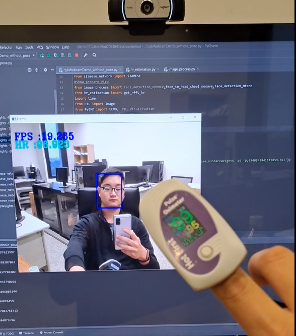

rPPG 遠端即時心律測量系統
利用網路攝影機偵測額頭與臉頰，透過模型轉換成RPPG的訊號並輸出心率
使用程式：Python
特色與說明
- 遠距離測量無接觸式裝置
- 利用模型與自注意力機制穩定rPPG訊號的轉換
第一階段 - 影像資訊收集與處理
- 收集影像資訊：
- 來自無接觸式裝置（例如攝像頭）讀取影像資訊。
- 綠色通道遮罩：
- 對收集到的影像進行綠色通道的遮罩，以提取有效的PPG信息。
- 綠色光在血液中的吸收和反射特性較高，更能反映心跳的變化，增強PPG信號的可見度。
- 權重分配：
- 為影像中的不同區域分配不同的權重，用於計算加權區域的PPG信號。
第二階段 - 心率計算與穩定機制
- 心率計算：
- 對處理過的心率訊號進行傅立葉轉換，獲得頻率域的訊息。
- 通過頻率分析檢測心律的周期性變化。
- 心率修正機制：
- 引入心率修正機制以提高計算的準確性。
- 利用先前的心率測量值進行修正，考慮環境條件和其他因素的影響。
- 投票機制：
- 使用投票機制提高心率的穩定性。
- 考慮不同算法或方法的心率計算結果，通過結合多個結果來減少誤差，獲得更穩定和可靠的心率估計。
Demo

利用指夾式心律來驗證正確與否
 我們提出的方法在各項數據上皆有好的表現
我們提出的方法在各項數據上皆有好的表現